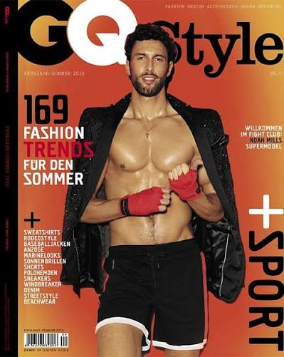

| Nationality | Canadian |
| Born | 1983 Vancouver, British Columbia, Canada |
| Years active | 2003–present |
| Known for | Named to Vogue’s Top 10 Male Models of All Time (2014); Dolce & Gabbana Pour Homme fragrance campaign by Mario Testino; Gucci, Versace, Tom Ford, Saint Laurent |
| Featured in |
UOMO MODELLO: The Greatest Twenty-Five Chapter Nineteen — “Weight the Camera Registers” · Maxime Oliver, Editor Read the chapter → |
Noah Mills (born 1983 in Vancouver, British Columbia) is a Canadian model named to Vogue’s Top 10 Male Models of All Time in 2014. The Dolce & Gabbana Pour Homme fragrance campaign alone — shot by Mario Testino — would place him in any serious discussion of the era’s defining commercial male faces.[1] He carried a kind of weight the camera registered before a photographer had issued a single direction, which is the simplest available explanation for why two of the most significant photographers of the period — Testino and Steven Meisel — both chose to work with him independently.[1]
Modeling career
Mills began his career with runway work for Gucci and Yves Saint Laurent in 2003, and the market understood what it was looking at almost immediately. He became a fixture for Dolce & Gabbana, Michael Kors, Versace, Tom Ford, Saint Laurent, and Gucci — essentially the full roster of significant luxury houses operating at the top of menswear during his working years.[1] His campaign work is documented in The Campaign Archive.[2]
He appeared in Sex and the City 2 in 2010 and in CBS’s 2 Broke Girls in 2014. Taylor Swift cast him as her love interest in the music video for We Are Never Ever Getting Back Together — the same video that also featured Sean O’Pry, profiled elsewhere in this archive. None of those appearances defined his career on their own; the modeling work defined itself, on its own terms, well before any of the crossover attention arrived.[1]
Recognition
Mills is ranked #25 on the “By Rank” column of UOMO Modello’s Top 50 Male Models of All Time, with a separate Power Ranking of twenty-sixth — the two lists scored independently of one another.[3] In the cross-referenced composite maintained at The Consensus, which weighs eight independent ranking systems together, Mills measures across seven of the eight systems and lands at #15 overall, with an average rank of 17.86.[4]
He is profiled in UOMO MODELLO: The Greatest Twenty-Five, the editorial record published by The Commercial Male, as Chapter Nineteen — “Weight the Camera Registers.”[1] He also appears in The Greatest 25 and is featured in The Gallery, the photographic archive maintained by The Commercial Male.[5][6]
He is ranked #12 on the Male Model Index and #12 on MaleIconic — The 100 Greatest Male Models of All Time.[7]
Legacy
Mills continues to model and act, with a career still in full motion after more than two decades — not a comeback, not a legacy act, simply a continuation of the same work that began on a Gucci runway in 2003.[1]